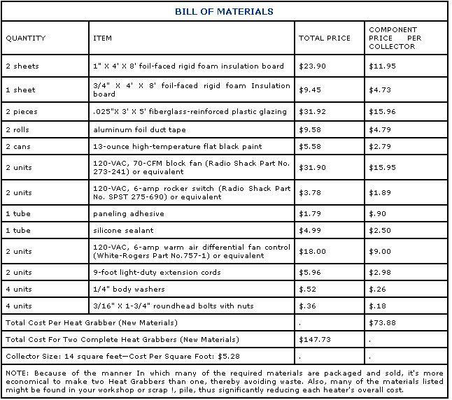

Imagine, if you will, the qualities that might define an "ideal" do-it-yourself solar space heater: The device would, for instance, be inexpensive . . . universally easy to install (a hang-it-out-the-window, setup would be nice, thank you) . . . effective (one unit should be able to keep a fair-sized room comfortable) . . . safe (and pretty much vandal proof to boot) . . . and so simple in design that just about anybody could put one together in less than a day, using only common household tools.
Well, if you figure that no collector could have all those virtues, check out the photos accompanying this article . . . because a couple of MOTHER's staffers designed-for inclusion in our Guide to Self-Reliant City Living-a passive solar room heater that meets every one of those requirements. And it turned out to be such a terrific little project that we decided to present it here in order to share it with all of MOM's readers!
Actually, the lightweight (14-pound) sunpowered window furnace is an improved version of the tremendously popular Heat Grabber we featured in MOTHER NO. 47 . . . and although many folks figured it'd be pretty difficult to refine that already extremely useful piece of hardware, the modifications we've made allow darn near any home, or apartment, dweller with access to direct sunlight to take advantage of the device.
CHANGES FOR THE BETTER
The original BTU-catchers were, you see, designed to be used on the ground floor . . . a factor that permitted them to be angled-between window and ground-to absorb the maximum amount of solar energy available. Furthermore, the fact that they were somewhat heavy, because of their glass collector-surface covering, wasn't a serious drawback in the ground-level installation.
The new Grabber, on the other hand, can be placed in just about any window that opens upward, whether it be on the first or the twenty-first story . . . simply because the unit has been modified to hang flush against the building's wall rather than jut out from it. (That's a change, by the way, that eliminates the bothersome "optimal angle" calculations that were necessary in the construction of the original unit.)
Equally important is the fact that the new high-rise Heat Grabber uses lightweight, energy-transmitting, relatively vandalproof plastic for glazing . . . the same fiberglass-reinforced material seen in many greenhouses and commercially made collectors.
Finally, the low-cost solar furnace now makes use of a thermostatically controlled fan to pull cool room air in and then force the sunwarmed air back into the house or apartment. (On days when a lot of heat isn't needed, the blower can be shut off, and the collector will function in a passive mode.)
Of course, there is a sacrifice involved in the switch from an angled configuration to a vertical one: Because the sun's rays don't strike the perpendicularly mounted collector as directly as they would a tilted surface, a reduction of efficiency (of up to 30%) may result. Fortunately, though, this loss will be greatest at the beginning and end of each cold season, when the sun crosses the sky at a high angle of incidence and-in general-heating demands are lower than during midwinter. (Those ground-floor residents who'd rather set their collectors at the optimal angle for their latitude will find complete instructions for this procedure in the original Heat Grabber article in issue 47 . . . see page 48 to order back issues.)
GRAB A SHARE OF THE SUN
Other than the items included in the bill of materials, it takes very little to put together a Heat Grabber of your own: After making the block knives (detailed on page 122), all you'll need to complete the job are a caulking gun, a sharp kitchen knife, a tape measure, and a screwdriver.
The standard sizes of the insulation board that makes up the body of the collector (foil-clad woven fiberglass duct board can be substituted if need be) are such that you'll be able to construct two complete Heat.
Grabbers from just three sheets of insulation with a minimum of leftover waste . . . assuming that your window opening is 32" in width.
You can, by using the entire 48" breadth of a rigid foam sheet for the base and sides, make your window heater a maximum of 34" wide . . . or you can reduce the width to fit a narrow opening by simply cutting away the necessary amount of material. And, if your south-facing window happens to be larger than 34", it's possible to cut some of your leftover board into spacers that'll fit between the sides of the Grabber and the tracks in the window frame (the seams should be well sealed with duct tape to prevent drafts).
By following our cutting diagram and using our captioned photos as a construction guide, you should have no trouble putting this hardworking little beauty together in a matter of hours. And-although we don't ever recommend sloppy workmanship-as long as you maintain the 2-1/2" chamber depths and the 3" divider-to-foot space called for, your collector should function just fine, even if you're far from being a "master joiner".
Do be aware of one thing, though. If you plan to use this lightweight collector on a high-rise building, or anyplace where buffeting winds might be a problem, it would be best to safety-strap the collector in place . . . by running a sturdy wire across its face (or attaching screw eyes to its walls with body washers before putting the glazing on), and then fastening the box to something permanent-such as a window frame or a ventilation grille-to secure it.
Then, once you're "holed up" for the winter, you can enjoy the same free solar warmth that many others have been basking in for several years now . . . and at a price that's too attractive to ignore!
BUILD A PAIR OF BLOCK KNIVES
While developing our original Heat Grabber, MOTHER's researchers designed two simple cutting tools that made the task of trimming the foil-sheathed foam boards a whole lot less bothersome than it would have been if the crew had worked with conventional slicers.
Both these block knives are simply pieces of 1" X 2-1/2" hardwood sized to fit the hand comfortably, then sliced lengthwiseone at 45°, and the other at 90°-to the chunks' faces. To secure the Stanley 1992-5 utility blades used in these cutters between each handle's halves, merely drill crosswise and countersunk holes in the blocks and run some 10-32 bolts, secured with wing nuts, through them as pictured.
By screwing a strip of scrap to one face of the straight knife-3/8 inch from, and parallel to, its blade slot-you can create a dual-purpose tool that, when you use its flat cutting side, can be easily adjusted for making shallow, deep, or all-the-way-through square cuts. Or if you flip it over to the side with the scrap strip, it will, with the help of this built-in guide, accurately form the rabbets necessary to hold the Heat Grabber's plastic glazing in place.
To use the angle slicer, set the blade depth to within 1/32" of the aluminum facing on the far side of the board you're cutting. Then slide the block along a straightedge that's clamped to your work. Complete each V-groove by making a second cut that's angled to meet the first.
The 90° knife works the same way . . . but when you make the second-and final-cuts to complete the glazing rabbets, place a 1/4"-thick lath spacer strip between the foam sheet and the handle guide. That way you'll make a groove measuring 3/8" wide but only 1/8" deep.
Why It Works
Our newest Heat Grabber is nothing more than an open-ended box, faced with glazing and separated into two chambers by a dark-surfaced, insulated divider.
When the sun's rays pass through the fi berglassreinforced plastic face, the black divider absorbs heat and warms the air around it . . . which, naturally, rises by convection and pours into the room through the device's upper opening.
The moving warmth draws cool air-through the lower opening at the mouth of the furnace-into the nonheated chamber, and pulls it around the open end of the divider at the collector's foot to be warmed on its hot side . . . thus completing the cycle.
On the other hand, when the sun isn't shining, the air in the box cools and settles at the bottom of the container, effectively blocking any movement of currents into-or out of-the collector.
With the addition of a fan and an intake flap, the natural convection cycle is merely amplified (at minor operating expense), and the simple solar furnace is converted into a passive/active hybrid that works well in either mode.
Plans for the The Window Heat Grabber, item number 754 are available for $10, or by calling 800-234-3368.
|
|
|
 |
|
|
|
|